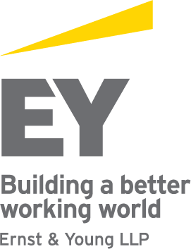

IBBI-IGIDR Insolvency and bankruptcy reforms conference
3rd - 4th August, 2018
Magnolia, India Habitat Center, Delhi
Friday, 3rd August
| 08:30 - 09:00 | Registration, Coffee and Tea |
| 09:00 - 10:15 | Inaugural session Welcome Address: Susan Thomas, IGIDR Keynote Address: M. S. Sahoo, Chairperson IBBI Guest of Honor: Injeti Srinivas, Secretary, Ministry of Corporate Affairs Chief Guest: P. P. Chaudhary, Hon'ble Minister of State for Law and Justice and Corporate Affairs Vote of Thanks: Ritesh Kavdia, IBBI |
| 10:15 - 10:30 | Break |
| 10:30 - 11:30 |
Session I: How is IBC working? Session Chair: Gyaneshwar Singh, Ministry of Corporate Affairs The Reserve Bank of India (RBI) - 12 cases under the Insolvency and Bankruptcy Code (IBC) [presentation] Joshua Felman, J. H. Consultants, Varun Marwah and Anjali Sharma, Finance Research Group, IGIDR Discussant: Chinmaya Goyal, NITI Aayog Value destruction and wealth transfer under the Insolvency and Bankruptcy Code [paper] [presentation] Pratik Datta, University of Oxford Discussant: Ajay Shah, NIPFP [presentation] |
| 11:30 - 13:00 | Panel 1: Challenges in arriving at a resolution plan Context setting: Rajnish Kumar, State Bank of India Sapan Gupta, Shardul Amarchand Mangaldas Anuj Jain, BSRR & Co. Nikhil Srivastava, KKR Suharsh Sinha, AZB & Partners Shashank Saksena, Department of Ecomonic Affairs Mamta Suri, IBBI Moderator: Susan Thomas, IGIDR |
| 13:00 - 14:00 | Lunch |
| 14:00 - 15:00 | Session II: Incentive effects of the insolvency law Session Chair: Bhargavi Zaveri, Finance Research Group, IGIDR Creditor rights and bank losses: A cross-country comparison [paper] [presentation] Amanda Rae Heitz and Ganapathi Narayanamoorthy, A.B. Freeman School of Business Discussant: Joshua Felman, J. H. Consultants [presentation] Consumers as creditors in corporate bankruptcy [presentation] Gausia Shaikh and Anjali Sharma, Finance Research Group, IGIDR Discussant: Aparna Ravi, Samvad Partners [presentation] |
| 15:00 - 15:15 | Break |
| 15:15 - 17:00 | Panel 2: Challenges post IRP Context setting: Shuva Mandal, Tata Sons Dhananjay Kumar, Cyril Amarchand Mangaldas Nikhil Shah, Alvarez and Marsal Nilang Desai, AZB & Partners Harish Chander, Edelweiss Dhinal Shah, Ernst & Young Moderator: Ajay Shah, NIPFP |
| 19:00 onwards | Dinner Marigold, India Habitat Centre |
Saturday, 4th August
| 09:00 - 09:30 | Registration, Coffee and Tea |
| 09:30 - 10:15 | Special Session Susan Thomas, IGIDR [presentation] Subhash Chandra Garg, Secretary, Department of Economic Affairs Sumant Batra, Kesar Dass B. & Associates [presentation] Moderator: Anjali Sharma, Finance Research Group, IGIDR |
| 10:15 - 10:30 | Break |
| 10:30 - 11:30 | Session III: Building institutional capacity for the IBC Session Chair: Anjali Sharma, Finance Research Group, IGIDR Regulating Insolvency Professionals under the IBC Tracing pathways to regulation based on a study of professional development [paper] [presentation] Anirudh Burman, NIPFP and Rajeswari Sengupta, IGIDR Discussant: Sumant Batra, Kesar Dass B. & Associates |
| 11:30 - 13:00 | Conversations on building institutional capacity in adjudication Context setting: Bhargavi Zaveri, Finance Research Group, IGIDR [presentation] Hon'ble Justice Kannan Ramesh, Supreme Court of Singapore Hon'ble Justice M. M. Kumar, NCLT |
| 13:00 - 14:00 | Lunch |
| 14:00 - 15:00 | Session IV: Ecosystem for IBC reform Session Chair: Joshua Felman, J. H. Consultants Enterprise value of firms in insolvency [paper] [presentation] Deepak Panda and Sagar Goyal, Duff & Phelps India Private Limited Discussant: Venkatesh Panchapagesan, IIM Bangalore [presentation] Catch and release: data in the IBC ecosystem [presentation] Adam Feibelman, Tulane University and Renuka Sane, NIPFP Discussant: Ritesh Kavdia, IBBI |
| 15:00 - 15:15 | Break |
| 15:15 - 16:30 | Panel 3: A market for stressed assets Context setting: Ravi Chachra, Eight Capital Management, LLC Sudarshan Sen, RBI Joshua Felman, J. H. Consultants P. R. Ramesh, Deloitte India Navrang Saini, IBBI Anurag Das, The Blackstone Group Venkattu Srinivasan, Kotak Mahindra Bank Ltd. Shailendra Ajmera, Ernst & Young Moderator: Harsh Pais, Trilegal |
| 16:30 - 17:30 | A last word: The reform agenda Montek Singh Ahluwalia Somasekhar Sundaresan, Advocate A. S. Chandiok, Senior Advocate, Supreme Court of India Moderator: M. S. Sahoo, Chairperson, IBBI |
   |